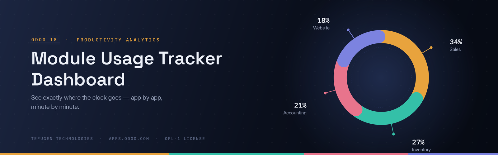
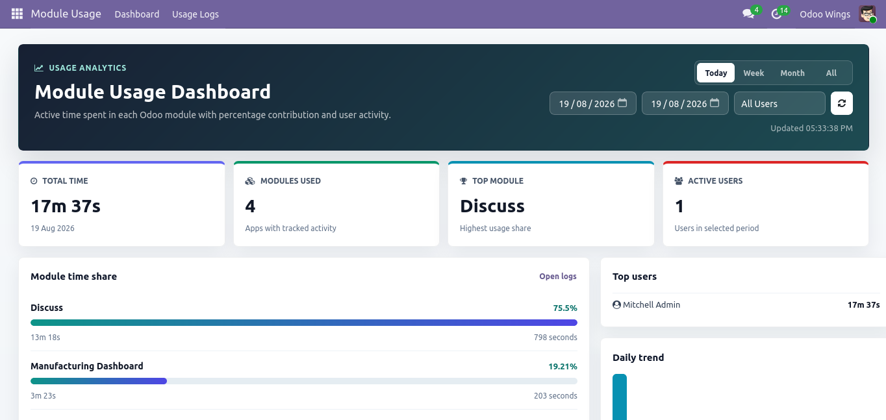

See exactly where the clock goes, app by app and minute by minute, with live percentages, user breakdowns and trend analytics.


This module records active, visible-tab time for every Odoo app while people work, then turns it into a live backend dashboard. See total tracked time and how much of it each module takes, for today, this month, or any custom date range, with a breakdown by user and a daily trend chart.
|
Module Time Tracking
Lightweight browser heartbeats record active, visible-tab time for every Odoo app while people work.
|
Percentage Dashboard
See total tracked time and how much of it each module takes, for today, this month, or any custom range.
|
User Analytics
Compare top users, filter by person, and drill into the underlying logs whenever you need to audit usage.
|
Everything needed to see where working time actually goes, without leaving the backend.
| Today, week, month, all-time and custom date filters | Total usage time shown in readable hours, minutes and seconds |
| Module-by-module percentage bars with clickable drill-down logs | Top-user breakdown alongside a recent-activity feed |
| Daily trend view for tracked usage hours over time | List, graph, pivot and form views for deeper analysis |
Three steps turn browser activity into a dashboard you can trust.
|
01
Heartbeat
While someone works, the web client sends a periodic ping for whichever app is active on screen.
|
02
Capped & aggregated
Hidden tabs and long idle gaps are capped automatically, so timing stays honest instead of inflated.
|
03
Dashboard insights
Totals, percentages, trends and user breakdowns update instantly in the backend dashboard.
|